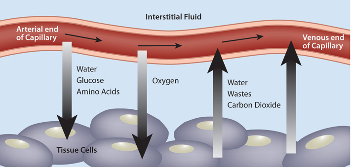

You know you cannot live without blood, and that your heart pumps your blood over a vast network of veins and arteries within your body, carrying oxygen to your cells. However, beyond these basic facts, what do you know about your blood?
Blood is a connective tissue of the circulatory system, transporting absorbed nutrients to cells and waste products from cells. It supports cellular metabolism by transporting synthesized macromolecules and waste products. Additionally, it transports molecules, such as hormones, allowing for communication between organs. The volume of blood coursing throughout an adult human body is about 5 liters (1.3 gallons) and accounts for approximately 8 percent of human bodyweight.
Blood is about 78 percent water and 22 percent solids by volume. The liquid part of blood is called plasma and it is mostly water (95 percent), but also contains proteins, ions, glucose, lipids, vitamins, minerals, waste products, gases, enzymes, and hormones. You learned in Chapter 6 "Proteins" and Chapter 7 "Nutrients Important to Fluid and Electrolyte Balance" that the protein albumin is found in high concentrations in the blood. Albumin helps maintain fluid balance between blood and tissues, as well as helping to maintain a constant blood pH. In Chapter 7 "Nutrients Important to Fluid and Electrolyte Balance" we learned that the water component of blood is essential for its actions as a transport vehicle, and that the electrolytes carried in blood maintain fluid balance and a constant pH. Furthermore the high water content of blood helps maintain body temperature, and the constant flow of blood distributes heat throughout the body. Blood is exceptionally good at temperature control, so much so that the many small blood vessels in your nose are capable of warming frigid air to body temperature before it reaches the lungs.
The cellular components of blood include red blood cells, white blood cells, and platelets. Red blood cellsThe most numerous cells in blood, which transport oxygen to all cells in the body. are the most numerous of the components. Each drop of blood contains millions of them. Red blood cells are red because they each contain approximately 270 million hemoglobin proteins, which contain the mineral iron, which when bound to oxygen turns red. The most vital duty of red blood cells is to transport oxygen from the lungs to all cells in the body so that they can make energy via aerobic metabolism. The white blood cellsCells of the immune system that survey the entire body looking for foreign invaders to destroy. that circulate in blood are part of the immune system and they survey the entire body looking for foreign invaders to destroy. They make up about 1 percent of blood volume. PlateletsFragments of cells that, when stimulated by blood vessel injury, rush to plug up the wound. are fragments of cells that are always circulating in the blood in case of an emergency. When blood vessels are injured platelets rush to the site of injury to plug the wound. Blood is under a constant state of renewal and is synthesized from stem cells residing in bone marrow. Red blood cells live for about 120 days, white blood cells live anywhere from eighteen hours to one year, or even longer, and platelets have a lifespan of about ten days.
What Is Blood?
(click to see video)Watch this brief animation on the importance of blood components.
Once absorbed from the small intestine, all nutrients require transport to cells in need of their support. Additionally, molecules manufactured in other cells sometimes require delivery to other organ systems. Blood is the conduit and blood vessels are the highway that support nutrient and molecule transport to all cells. Water-soluble molecules, such as some vitamins, minerals, sugars, and many proteins, move independently in blood. Fat-soluble vitamins, triglycerides, cholesterol, and other lipids are packaged into lipoproteins that allow for transport in the watery milieu of blood. Many proteins, drugs, and hormones are dependent on transport carriers, primarily albumin. In addition to transporting all of these molecules, blood must transfer the oxygen breathed in by the lungs to all cells in the body. As discussed, the iron-containing hemoglobin molecule in red blood cells accomplishes this.
Figure 10.1 The Capillary Exchange: Nutrients In and Wastes Out
In the metabolism of macronutrients to energy, cells produce the waste products carbon dioxide and water. As blood travels through smaller and smaller vessels, the rate of blood flow is dramatically reduced allowing for efficient exchange of nutrients and oxygen for cellular waste products. The kidneys remove any excess water in the blood, and blood delivers the carbon dioxide to the lungs where it is exhaled. Also, the liver produces the waste product urea from the breakdown of amino acids, and detoxifies many harmful substances, all of which require transport in the blood to the kidneys for excretion.
We are not going to talk about the three musketeers, but we will talk about the way our bodies function and work harmoniously to sustain life. The eleven organ systems in the body completely depend on each other for continued survival as a complex organism. Blood allows for transport of nutrients, wastes, water, and heat, and is also a conduit of communication between organ systems. Blood’s importance to the rest of the body is aptly presented in its role in glucose delivery, especially to the brain. The brain metabolizes, on average, 6 grams of glucose per hour. In order to avert confusion, coma, and death, glucose must be readily available to the brain at all times. To accomplish this task, cells in the pancreas sense glucose levels in the blood. If glucose levels are low, the hormone glucagon is released into the blood and is transported to the liver where it communicates the signal to ramp-up glycogen breakdown and glucose synthesis. The liver does just that, and glucose is released into the blood, which transports it to the brain. Concurrently, blood transports oxygen to support the metabolism of glucose to energy in the brain. Healthy blood conducts its duties rapidly, avoiding hypoglycemic coma and death. This is just one example of the body’s survival mechanisms exemplifying life’s mantra, “All for one, one for all.”
Maintaining healthy blood, including its continuous renewal, is essential to support its vast array of vital functions. Blood is healthy when it contains the appropriate amount of water and cellular components, and proper concentrations of dissolved substances, such as albumin and electrolytes. As with all other tissues, blood needs macro- and micronutrients to optimally function. In the bone marrow, where blood cells are made, amino acids are required to build the massive amount of hemoglobin packed within every red blood cell, along with all other enzymes and cellular organelles contained in each blood cell. Red blood cells, similar to the brain, use only glucose as fuel, and it must be in constant supply to support red-blood-cell metabolism. As with all other cells, the cells in the blood are surrounded by a plasma membrane, which is composed of mainly lipids. Blood health is also acutely sensitive to deficiencies in some vitamins and minerals more than others, a topic that will be explored in this chapter.
Since blood is the conduit of metabolic products and wastes, measuring the components of blood, and particular substances in blood, can reveal not only the health of blood, but also the health of other organ systems. In standard blood tests performed during an annual physical, the typical blood tests conducted can tell your physician about the functioning of a particular organ or about disease risk.
A biomarkerA measurable molecule or trait that is connected with a specific disease or health condition. is defined as a measurable molecule or trait that is connected with a specific disease or health condition. The concentrations of biomarkers in blood are indicative of disease risk. Some biomarkers are cholesterol, triglycerides, glucose, and prostate-specific antigen. The results of a blood test give the concentrations of substances in a person’s blood and display the normal ranges for a certain population group. Many factors, such as physical activity level, diet, alcohol intake, and medicine intake can influence a person’s blood-test levels and cause them to fall outside the normal range, so results of blood tests outside the “normal” range are not always indicative of health problems. The assessment of multiple blood parameters aid in the diagnosis of disease risk and are indicative of overall health status. See Table 10.1 "Blood Tests" for a partial list of substances measured in a typical blood test. This table notes only a few of the things that their levels tell us about health.
Table 10.1 Blood Tests
| Substance Measured | Indicates |
|---|---|
| Red-blood-cell count | Oxygen-carrying capacity |
| Hematocrit (red-blood-cell volume) | Anemia risk |
| White-blood-cell count | Presence of infection |
| Platelet count | Bleeding disorders, atherosclerosis risk |
| pH | Metabolic, kidney, respiratory abnormalities |
| Albumin | Liver, kidney, and Crohn’s disease, dehydration |
| Bilirubin | Liver-function abnormality |
| Oxygen/Carbon Dioxide | Respiratory or metabolic abnormality |
| Hemoglobin | Oxygen-carrying capacity |
| Iron | Anemia risk |
| Magnesium | Magnesium deficiency |
| Electrolytes (calcium, chloride, magnesium, potassium) | Many illnesses (kidney, metabolic, etc.) |
| Cholesterol | Cardiovascular disease risk |
| Triglycerides | Cardiovascular disease risk |
| Glucose | Diabetes risk |
| Hormones | Many illnesses (diabetes, reproductive abnormalities) |
Source: National Heart Lung and Blood Institute. “Types of Blood Tests.” January 6, 2012. http://www.nhlbi.nih.gov/health/health-topics/topics/bdt/types.html.
Visit the websites of the National Heart, Lung, and Blood Institute and Lab Tests Online to find out more on what to expect on blood tests and how to interpret results.
http://www.nhlbi.nih.gov/health/dci/Diseases/bdt/bdt_whatdo.html
Come up with an estimate on how often it is safe to donate blood. Get the facts on donating blood by visiting the website of the Red Cross.
http://www.redcrossblood.org/donating-blood/eligibility-requirements